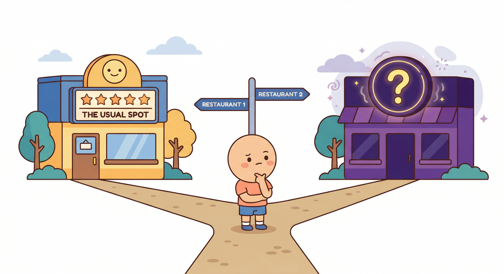
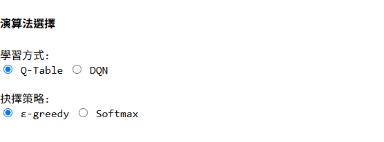
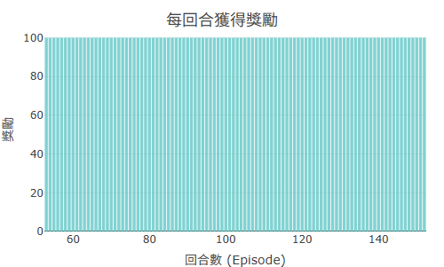
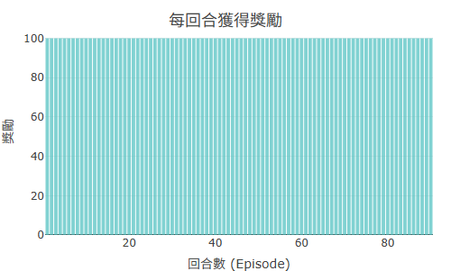

想像你在一個陌生城市找餐廳。第一天隨機走進一家拉麵店，還不錯，評個 7 分。 第二天你又去同一家——因為這是你目前「已知最好的」。 第三天、第四天，還是同一家。
結果是：你永遠不會知道隔壁那家義大利麵其實是 9 分。 你的「最佳選擇」被鎖死在第一次的不完整資訊裡了。
這就是強化學習裡的 探索與利用的取捨（Exploration vs Exploitation）：
最常見的解法是 ε-greedy（ε 念作 epsilon-greedy）：
ε 越高，探索越多；ε 越低，越傾向利用已知。 兩個極端：ε = 1 是完全隨機，ε = 0 是完全貪婪（greedy）。
RR 預設啟用 Cold-Start：訓練開始時 ε 很高（大量探索）， 隨著訓練回合推進，ε 按衰減率逐漸降低，Agent 慢慢轉向利用已學到的策略。 這模擬了「先廣泛嘗試、後逐漸收斂」的學習過程。

ε-greedy 的問題是：它不管 Q 值的差距大小—— 不管第一名領先第二名是 0.01 分還是 100 分，它都是用同一個 ε 決定要不要隨機。
Softmax 策略 更細膩：它把所有動作的 Q 值轉換成機率分布， Q 值越高的動作被選到的機率越高，但不是 100%。 如果幾個動作的 Q 值很接近，每個都有不低的機率被選到（保持探索）； 如果某個動作明顯最好，它被選的機率就接近 1（近似貪婪）。
Softmax 有一個「溫度」參數控制分布的集中程度：
| ε-greedy | Softmax | |
|---|---|---|
| 探索方式 | 固定機率 ε 隨機選動作 | 依 Q 值比例選動作 |
| Q 值差距的影響 | 不影響探索機率 | 差距大時自動減少探索 |
| 調整方式 | 調 ε 值與衰減率 | 調溫度參數 |
| 適合場景 | 離散、清楚的狀態空間 | Q 值分布不均勻時更有優勢 |
| RR 建議起點 | Maze1D / Maze2D，ε 從 0.3–0.5 開始 | MAB / heli，觀察自動收斂行為 |
以下是一個很有說服力的對比實驗，可以在 RR 上直接做： 用 Maze2D，其他參數不變，只改探索策略。
ε=0.05：快速收斂但易陷局部最佳

ε=0.2（預設）：穩定收斂

ε=0.5：持續探索，收斂慢
這是初學者非常常見的直覺，但結果恰恰相反。
ε = 0 代表 Agent 從頭到尾都只選「目前 Q 值最高的動作」。 但訓練剛開始，Q-Table 都是 0（或隨機初始值）， 根本沒有足夠資訊知道哪個動作真的比較好—— 「最高 Q 值」只是隨機初始化帶來的假象。
這樣的 Agent 會很快鎖死在第一個碰巧 Q 值稍高的動作， 從此一直重複，其他動作的 Q 值永遠沒機會被更新， 整個 Q-Table 學不起來。
正確做法：讓訓練初期有足夠探索（ε 較高或使用 cold-start）， 確保各狀態-動作組合都被嘗試到，才能讓 Bellman 更新有意義。